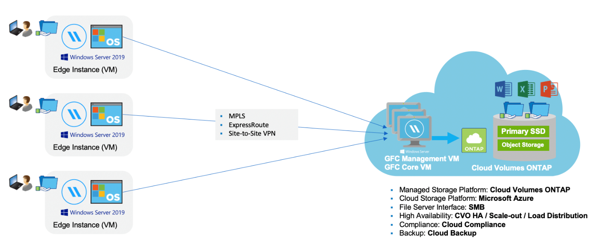

要求變更文件
要求變更文件 編輯此頁面
編輯此頁面 瞭解如何作出貢獻
瞭解如何作出貢獻深入瞭解全域檔案快取
NetApp 全球檔案快取可讓您將分散式檔案伺服器的封閉環境整合至公有雲中的單一整體儲存空間。這會在雲端中建立全域存取的檔案系統、讓所有遠端位置都能像在本機一樣使用。
總覽
實作「全域檔案快取」可產生單一集中式儲存設備佔用空間、而非分散式儲存架構、需要在每個位置進行本機資料管理、備份、安全管理、儲存及基礎架構佔用空間。

功能
「全域檔案快取」可啟用下列功能：
-
將資料整合並集中到公有雲、並運用企業級儲存解決方案的擴充性與效能
-
為全域使用者建立單一資料集、並運用智慧型檔案快取來改善全域資料存取、協同作業及效能
-
仰賴自我維持、自我管理的快取、並消除完整的資料複本與備份。利用本機檔案快取來取得主動式資料、並降低儲存成本
-
透過即時中央檔案鎖定的全域命名空間、從分公司位置進行透明存取
請參閱「全域檔案快取」功能和使用案例的詳細資訊 "請按這裡"。
全域檔案快取元件
全域檔案快取包含下列元件：
-
全域檔案快取管理伺服器
-
全域檔案快取核心
-
全域檔案快取 Edge （部署於遠端位置）
Global File Cache Core 執行個體會掛載至您所選後端儲存平台（例如 Cloud Volumes ONTAP ： Cloud Volumes Service 並建立 Global File Cache Fabric 、無論資料位於公有雲的一或多個儲存平台上、都能將非結構化資料集中並整合至單一資料集。 Azure NetApp Files

支援的儲存平台
全域檔案快取支援的儲存平台會因您選取的部署選項而有所不同。
自動化部署選項
使用 Cloud Manager 部署時、下列類型的工作環境均支援「全域檔案快取」：
-
Azure 中的 Cloud Volumes ONTAP
-
AWS 中的 Cloud Volumes ONTAP
此組態可讓您從 Cloud Manager 部署及管理整個全域檔案快取伺服器端部署、包括全域檔案快取管理伺服器和全域檔案快取核心。
手動部署選項
全域檔案快取組態也支援Cloud Volumes ONTAP 使用安裝Cloud Volumes Service 在公有雲儲存基礎架構上的適用於Azure NetApp Files 各種系統的支援功能、包括：ONTAPNetApp AFF 的內部部署解決方案也可在 NetApp 的功能性和 FAS 功能性平台上使用。在這些安裝中、必須手動設定及部署全域檔案快取伺服器端元件、而非使用 Cloud Manager 。
請參閱 "NetApp 全球檔案快取使用者指南" 以取得詳細資料。
全域檔案快取的運作方式
全域檔案快取會建立一個軟體架構、在全域遠端辦公室中快取作用中的資料集。如此一來、企業使用者就能保證在全球範圍內享有透明的資料存取和最佳效能。

本範例中所提及的拓撲是中樞型和星型模式、遠端辦公室 / 位置的網路會存取雲端中的一組通用資料。此範例的重點包括：
-
集中式資料儲存區：
-
企業公有雲儲存平台、 Cloud Volumes ONTAP 例如
-
-
全域檔案快取架構：
-
將中央資料存放區延伸至遠端位置
-
全域檔案快取核心執行個體、掛載至公司檔案共用（ SMB ）。
-
在每個遠端位置執行的全域檔案快取 Edge 執行個體。
-
在每個遠端位置顯示虛擬檔案共用區、以便存取中央資料。
-
在自訂大小的 NTFS 磁碟區（「 D ： \ 」）上裝載智慧型檔案快取。
-
-
網路組態：
-
多重傳輸協定標籤交換（ MPLS ）、 ExpressRoute 或 VPN 連線
-
-
與客戶的 Active Directory 網域服務整合。
-
使用通用命名空間的 DFS- 命名空間（建議）。
成本
使用全域檔案快取的成本取決於您選擇的安裝類型。
-
所有安裝都需要在雲端部署一或多個磁碟區 Cloud Volumes ONTAP （例如、 Cloud Volumes Service 支援、支援或 Azure NetApp Files 支援）。這會從所選的雲端供應商收取費用。
-
所有安裝也需要在雲端部署兩個以上的虛擬機器（ VM ）。這會從所選的雲端供應商收取費用。
-
全域檔案快取管理伺服器：
在Azure中、此功能可在具有127 GB優質SSD的D2S_V3或同等（2個vCPU / 8 GB RAM）VM上執行
在AWS中、這會在具有127 GB通用SSD的m4.large或等效（2 vcpU/8 GB RAM）執行個體上執行
-
全域檔案快取核心：
在Azure中、此功能可在具有127 GB優質SSD的D4s_V3或同等（4個vCPU / 16 GB RAM）VM上執行
在AWS中、這會在m4.xlarge或同等（4個vcpU/16 GB RAM）執行個體上執行、搭配127 GB通用SSD
-
-
安裝 Cloud Volumes ONTAP 時搭配 Azure 或 AWS 使用（透過 Cloud Manager 完全部署支援的組態）、每個站台每年需支付 3 、 000 美元（每個 Global File Cache Edge 執行個體）的費用。
-
使用手動部署選項安裝時、價格會有所不同。若要查看成本的高層級預估、請參閱 "計算您的節約潛力" 或洽詢您的全球檔案快取解決方案工程師、以討論企業部署的最佳選項。
授權
全域檔案快取包含以軟體為基礎的授權管理伺服器（ LMS ）、可讓您使用自動化機制來整合授權管理、並將授權部署至所有的核心和邊緣執行個體。
當您在資料中心或雲端部署第一個核心執行個體時、可以選擇將該執行個體指定為貴組織的 LMS 。此 LMS 執行個體只需設定一次、即可連線至訂閱服務（透過 HTTPS ）、並在啟用訂閱後、使用我們的支援 / 營運部門所提供的客戶 ID 驗證您的訂閱。完成此指定之後、您可以提供客戶 ID 和 LMS 執行個體的 IP 位址、將 Edge 執行個體與 LMS 建立關聯。
當您購買額外的 Edge 授權或續約訂閱時、我們的支援 / 營運部門會更新授權詳細資料、例如網站數量或訂閱結束日期。LMS 查詢訂購服務後、會自動更新 LMS 執行個體上的授權詳細資料、並套用至您的 GFC Core 和 Edge 執行個體。
請參閱 "NetApp 全球檔案快取使用者指南" 以取得授權的其他詳細資料。
限制
Cloud Manager 支援的全域檔案快取版本要求、作為中央儲存設備的後端儲存平台必須是在 Cloud Volumes ONTAP Azure 或 AWS 中部署了一個單一節點或 HA 配對的工作環境。
目前不支援使用 Cloud Manager 的其他儲存平台和其他雲端供應商、但可以使用舊版部署程序來部署。
這些其他組態、例如在 Cloud Volumes ONTAP Microsoft Azure 、 Google Cloud 或 AWS 上使用支援使用支援功能的全域檔案快取、 Cloud Volumes Service 也就是使用舊版程序。請參閱 "全域檔案快取總覽與就職" 以取得詳細資料。